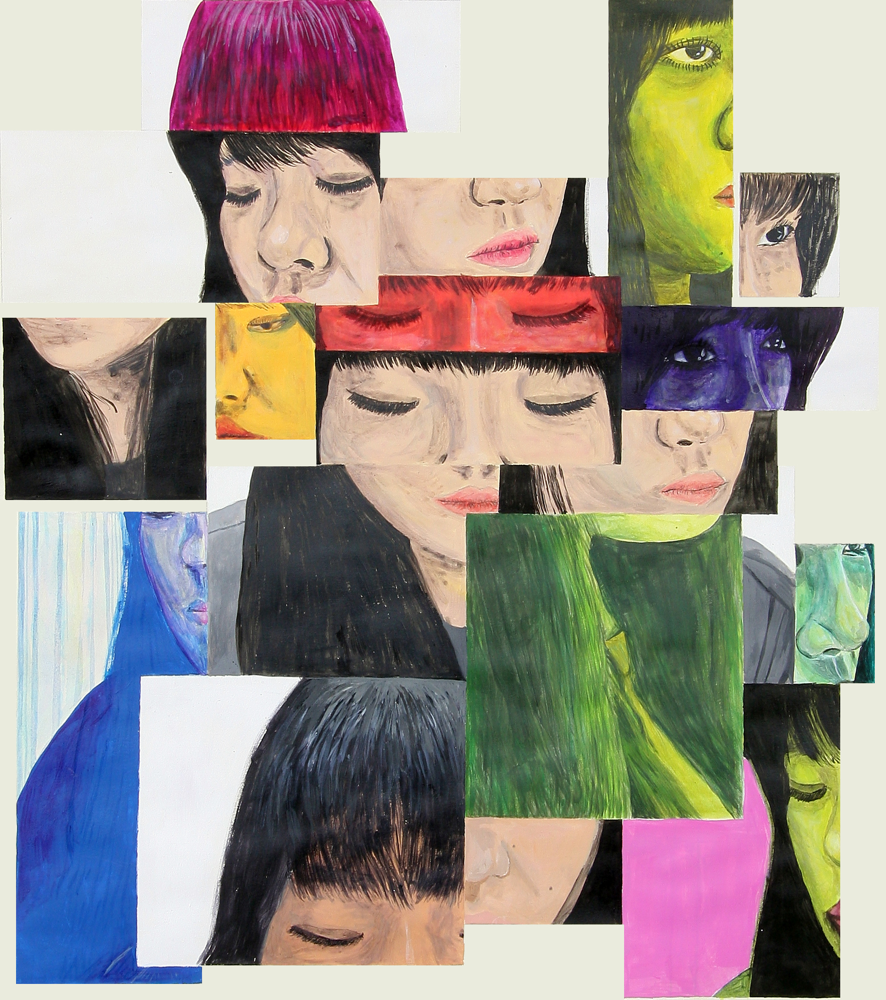

About Team

Jieun Lee
I am a senior major in Design | Media Arts and minor in Digital Humanities at UCLA. I came from Korea and have interest on design and media field.
Kathy Quach
I’m a junior studying business-economics and I intend to pursue digital/product marketing as a profession. I’m from San Jose, California and I enjoy Sunday brunches and photography.

Josue Mendez
Psychology Major and Entrepreneurship minor graduating December 2018. Josue Mendez will start his career as a Business Development Cosultant at Oracle, and desires to start an entrepreneurial venture in the future.

Danny Rivera
History major at UCLA, with focus on effects of socioeconomic factors on popular and underground music scenes and trends. When he’s not completing research, Danny can be found in his home studio, a local brewery tasting, an LA Kings game or at Rosie’s Dog Beach with his best bud, Rogie.
Yoon Young Chun
I am a senior student majoring in sociology and minoring in digital humanities. I came to Los Angeles 4 years ago and planning on graduating in 2019.
Mary Cooper Wahlen
I am a local SoCal born and raised non-traditional fourth-year student at UCLA majoring in Sociology minoring in Digital Humanities. This was my first DH class.